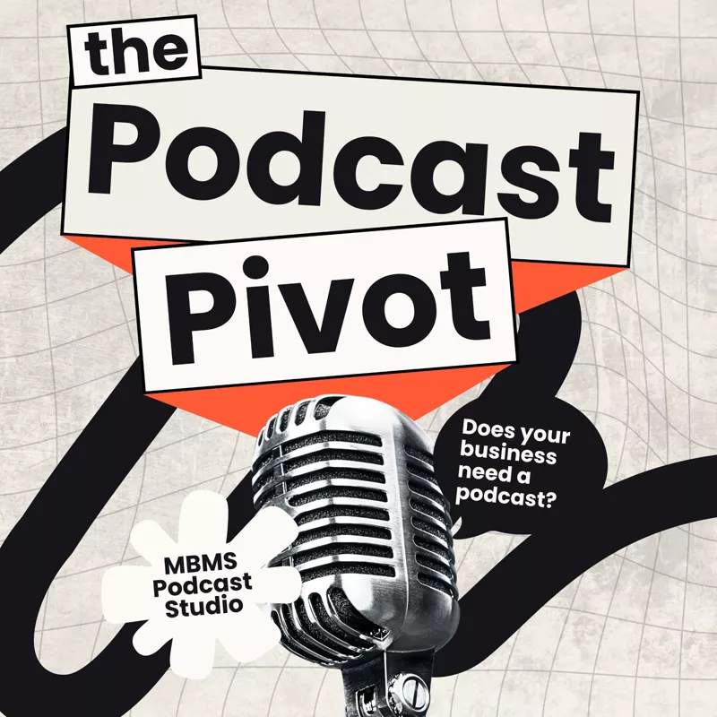

Introducing The Podcast Pivot: a podcast for businesses that want to podcast properly
We’re launching a podcast of our own. The Podcast Pivot is a short, sharp show for founders, marketers and business owners who are thinking about starting a podcast, or who already have one and aren’t getting what they hoped for from it.
I regularly talk to businesses that know a podcast could work for them but aren’t sure where to start. I also hear from people a few dozen episodes in, wondering why the downloads have stalled or why it feels like so much effort for so little return. The Podcast Pivot is for both groups.

Short, sharp and useful
Episodes run for 25 to 35 minutes. That’s long enough to get into something properly, and short enough to fit into a commute, a lunch break or a walk between meetings. No hour-long warm-ups and no padding: each episode should leave you with something you can use.
Two kinds of episode
- Guest conversations. Local business people and people from across the podcast and marketing industry, talking about what they’ve built, what they’ve learned and how they use audio and video to reach people.
- Solo and duo breakdowns. Shorter, focused episodes where we pick apart what works and what doesn’t, from choosing a format and booking guests to editing, clips and getting a show found.
Whether you’ve not recorded a word yet or you’re trying to rescue a show that’s lost its way, the aim is the same: help you make a podcast that’s worth your time and your listeners’ time.
Every episode is a showreel
The Podcast Pivot is made with the same equipment, setup and editing process we use for our clients. Some episodes will be recorded in the studio; others will be out and about, with our mobile kit and outdoor mics, wherever the conversation makes most sense. Either way, every episode doubles as a showreel. If you’ve ever wondered what an MBMS-produced podcast sounds and looks like, in a studio or on location, you won’t have to take our word for it: just press play.
It also keeps us honest. It’s one thing to give advice about sound, structure and promotion; it’s another to follow it, in public, on every episode of our own show.
Listen now
The Podcast Pivot is live. Press play below, or follow the show on Spotify or Apple Podcasts so you don’t miss an episode. I’ll share new episodes here on the blog as they’re released, along with a few notes on how each one was put together.
Frequently asked questions
What is The Podcast Pivot?
A short, sharp podcast from MBMS Podcast Studio for founders, marketers and business owners who are thinking about starting a podcast, or who already have one and want more from it.
How long are episodes of The Podcast Pivot?
Episodes run for 25 to 35 minutes: long enough to get into something properly, short enough for a commute or a walk between meetings.
Where can I listen to The Podcast Pivot?
On Spotify and Apple Podcasts. New episodes are also shared on the MBMS Podcast Studio blog.
Run a local business with a story to tell, or thinking about a podcast of your own? I’d love to hear from you, whether that’s as a guest on The Podcast Pivot or to talk about your own show.
Get in touch